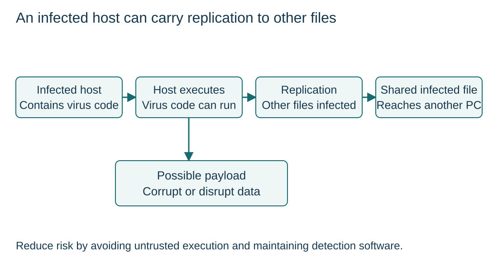

Viruses attach to a host and replicate
Visual overview
An infected host can carry replication to other files

Visual transcript
- A virus attaches to or modifies a host file or program.
- Executing the infected host can run the virus, which can replicate into further files and run a harmful payload.
- Sharing an infected host can carry it to another computer. Replication here depends on the host being executed, not merely existing in a folder.
Identify the host and activation event
A virus attaches to or modifies a host file or program. A shared or downloaded infected host provides a route to another computer, but the arrival of the file and the execution of its code are different events. In the executable-host model used here, running the infected program runs the attached code.
Separate spread from impact
The virus can copy its code into additional hosts, creating further opportunities to execute and spread. Its payload may alter or delete data or disrupt normal processing. Replication describes how it spreads; the payload describes harmful actions it performs. A virus need not immediately erase every file to count as an infection.
Explain the link to a precaution
Avoiding untrusted execution and controlling software installation reduce opportunities for the code to run. Updated anti-virus can detect and isolate recognised infection; a trusted backup may support recovery after damage. None of these precautions can be justified merely by saying that it makes the computer safe: identify the stage it interrupts.
Worked example · Follow one infected shared program
- Initial state
Computer A has an infected drawing program. Computer B has two clean executable files and an independent backup of its work.
- Arrival
The program is copied to B. In this stated model it has not yet executed on B.
- Execution and replication
A user runs it. The viral code executes and infects one other executable on B; that file can now carry infection when shared or run.
- Possible impact
Its payload corrupts a saved drawing. Detection and isolation address the infected files; recovery of the drawing requires a usable clean copy.
- Changed condition
If the copied host is detected and quarantined before execution, this execution-and-replication path is interrupted.
Core explanation · Exam essentials
- A virus infects a host file or program; executing the infected host can run the viral code and spread infection.
- Explain arrival, execution, replication and possible damage separately.